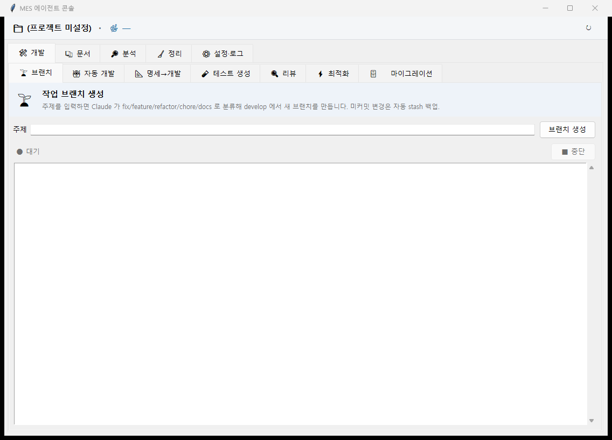

AUTOMATION SUITE · LIVE DEMO
브랜치 자동 분류
작업 주제를 입력하면 fix /
feature 타입과
브랜치 이름 슬러그를 실시간으로 만들어 줍니다. 아래에서 직접 타이핑해서 확인해 보세요.

실제 실행 화면입니다 — 왼쪽 "주제" 입력란에 쓰면 Claude가 호출되고, 아래 데모는 그 호출이 실패했을 때의 폴백만 재현합니다.
이 도구의 평소 동작은 Claude CLI를 호출해 주제를 분류합니다. 그건 브라우저에서 재현할 수 없어서,
대신 저장소에 실제로 있는 Claude 호출 실패 시의 폴백 로직을 그대로 JavaScript로 옮겨 동작시켰습니다.
규칙 기반이라 Claude가 분류한 결과보다 단순합니다.
원본 코드는
ops/branch.py의
classify() 폴백 분기와
common.py의
kebab_slug()에 있습니다.
$
실제 도구는 여기에 더해 base 브랜치로 이동, pull, git checkout -b까지 자동으로 실행합니다 — 데모는 분류 로직까지만입니다.